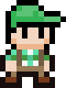

 Green Cap
Assets
This following image is the only asset that this project uses.

The image was posted by isaiah658 at opengameart.
Simplicity was the idea the here. I only used the standing animation in the first row and running animation in the second row.
Because of the absence of a up and down sprites, I use the previous horizontal direction (although, fixing the up and down to particular horizontal direction is not unheard of).

Since there is no left sprite, I only use the right sprite and reflect it make it look left. I have to shift over the x to compensate for reflecting. It looks like this in the code:
g.drawImage(frame, frame.getWidth(), 0, -frame.getWidth(), frame.getHeight(), null);
Altogether, I have used one direction’s worth of sprites for three other directons. Its minialistic, and but still manages to not look too bad.
Even though the image is very simple, it has layout problems. They include:
- the padding
- inconsistently sized sprites
These make it hard to parse the bounds of each sprite. The padding forces me to find the top left location of each sprite. The consistent sized sprites forces me to find the size of each sprite.
Because the sprites are so tightly packed, I could not use an automated tool because the tool will have trouble differentiating each sprite from one another.
And so, I had to do it by hand. I used to Paint.NET< to do this. Doing the work is not what annoys me. What annoys me how it forces me to hardcode numbers in the code. Here is just some of that mess:
int x = 0, y = 0, w = 12, h = 17;
if(state == State.STANDING)
{
int frame = (int)(stateElapsed / STANDING_PERIOD);
frame %= STANDING_FRAMES;
x = 19 + frame * 16;
y = 15;
}
Another issue is the non-transparent background. But this can be with bucket tool in any decent paint program (Paint.NET< in this case).